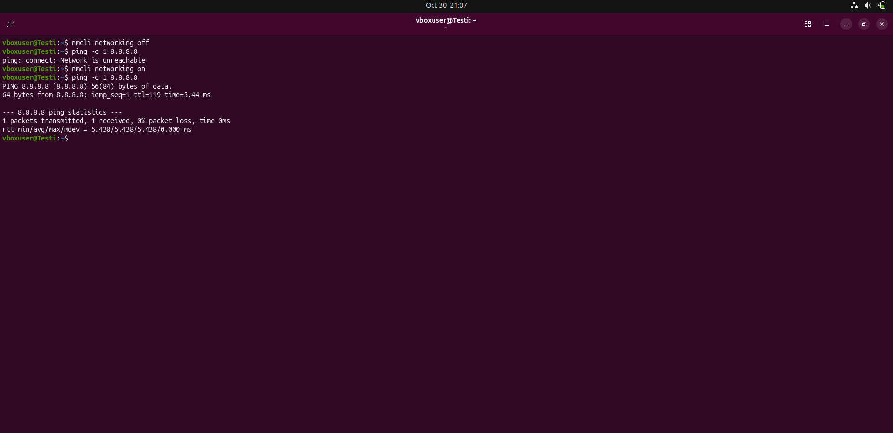
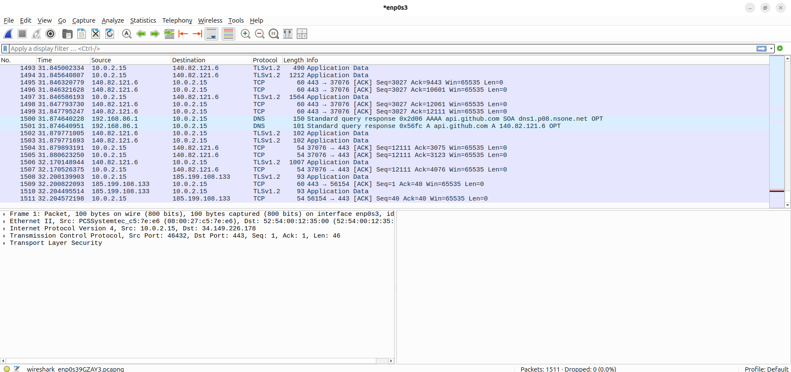
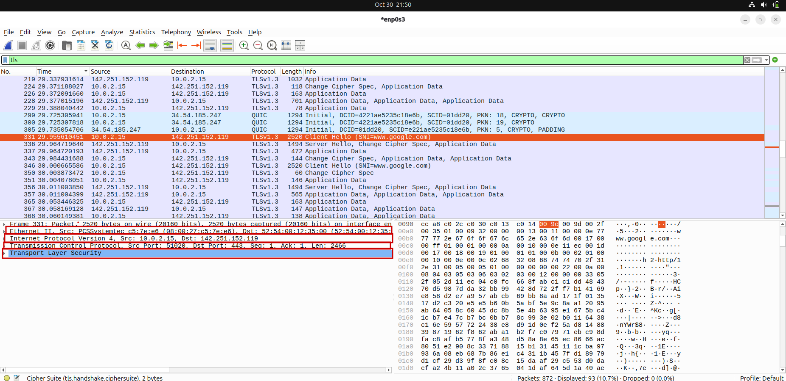
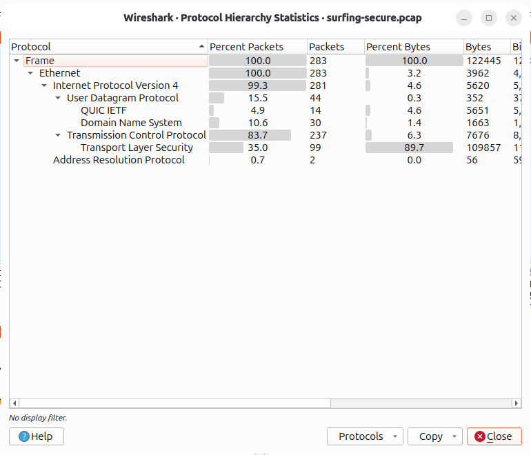
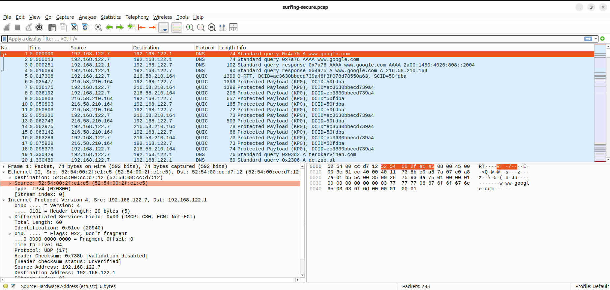
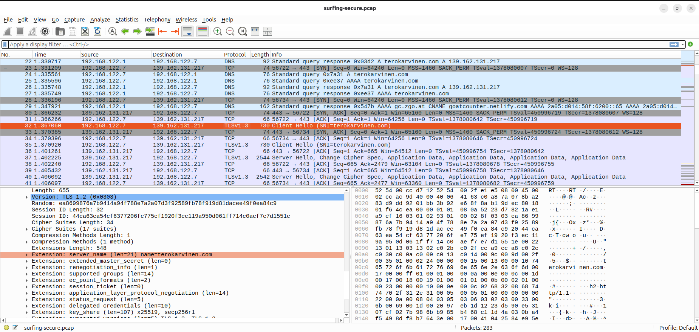
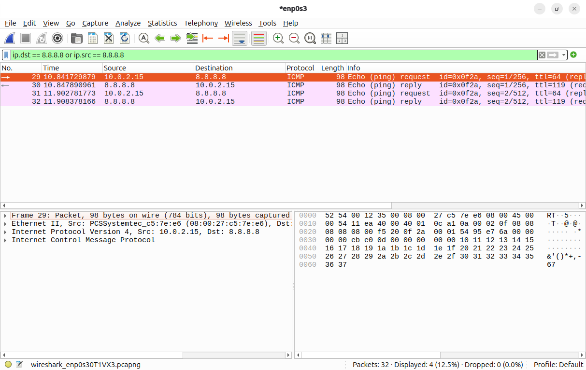

-Asenna Wireshark komennolla sudo apt-get install wireshark.
-Anna superusereille oikeus kaapata liikennettä.
-Lisää käyttäjäsi Wireshark-ryhmään ja kirjaudu ulos ja takaisin sisään.
-Statistics-tabin kautta saa yleisnäkymän kaapatusta liikenteestä ja liikenteen voi exportata pcap-tiedostoksi.
Karvinen 2025: Network Interface Names on Linux-Verkkoliitäntä on kuin verkkokortti, mutta sen ei tarvitse olla fyysisesti olemassa.
-Linuxissa langallinen Ethernet = en, langaton paikallisverkko (WLAN) = wl, loopback-osoite = lo.
Ajoin komennon: nmcli networking off.
Sen jälkeen ajoin: ping -c 1 8.8.8.8. Lisäsin -c 1 flagin, koska muuten pingailu jatkuu loputtomiin, vaikka yhteyttä katkaistaessa sillä ei olekaan väliä.
Palautin yhteyden komennolla: nmcli networking on.

Ensin ajoin komennon: sudo apt update.
Sen jälkeen: sudo apt-get install wireshark. Asennus piti vahvistaa.
Kun käynnistin Wiresharkin, sain ilmoituksen, ettei minulla ole oikeutta siepata paketteja.
Ajoin komennon: dpkg-reconfigure wireshark-common. Komento piti ajaa vielä uudestaan juurikäyttäjänä.
Sen jälkeen lisäsin itseni Wireshark-ryhmään: sudo usermod -aG wireshark $USER.
Tämän jälkeen valitsin Wiresharkissa enp0s3 (oman virtuaalikoneeni verkkokortti) ja liikennettä alkoi näkyä.

Avasin selaimessa google.com-sivun ja sieppasin liikennettä Wiresharkilla. Avasin yhden TLS-paketin, jossa näkyi neljä kerrosta.
Linkkikerros - Ethernet IILinkkikerros huolehtii tiedonsiirrosta paikallisessa verkossa. Se määrittää, miten tietokoneet voivat olla yhteydessä toisiinsa ohittamatta reititintä.
Verkkokerros - Internet Protocol Version 4Verkkokerroksen avulla eri verkot voivat olla yhteydessä toisiinsa tuntematta toistensa rakennetta.
Kuljetuskerros - Transmission Control ProtocolKuljetuskerros vastaa tiedonsiirrosta joko samassa tai eri verkossa olevien tietokoneiden välillä. Se mahdollistaa sovellusten viestimisen toisilleen.
Sovelluskerros - Transport Layer SecuritySovelluskerros sisältää protokollia, jotka mahdollistavat palveluiden käytön. Esimerkkejä näistä ovat HTTP, FTP ja SMTP.

Avasin tiedoston Wiresharkissa ja valitsin ylalaidasta Statistics ja Capture File Properties. Sen perusteella paketteja on yhteensä 283 kappaletta. Yhteensä pakettien koko on 122445 tavua ja yhden paketin keskimääräinen koko on 433 tavua.
Paketit on kaapattu seitsemän sekunnin aikana 28.3.2025 kelo 17.28.
Protocol Hierarchy Statistics -raportista näkyy, että kaapatut paketit sisältävät muun muassa DNS-, TCP-, TLS- ja QUIC -protokollia. DNS:ää käytetään verkko-osoitetta vastaavan IP-osoitteen selvittämiseen, TCP:tä luotettavan tiedonsiirron varmistamiseen ja TLS:ää liikenteen salaamiseen. QUIC mahdollistaa suojatun UDP-liikenteen. UDP puolestaan on nopea, mutta epäluotettava protokolla pakettien liikutteluun.

Statistics Endpoint -raportin IPv4-välilehdeltä käy ilmi, että paketteja on lähtetetty 7 osoitteeseen.
Muistelin, että luennolla oli ollut puhetta siitä, että MAC-osoitteen alku kertoo verkkokortin valmistajan. Avasin kaappauksen ensimmäisen paketin ja kopioin Ethernet II:n Source-kohdasta numerot 52:54:00. Liitin ne Google-hakuun. Paljastui, että kyseinen numero on tavallinen QEMU- ja KVM -virtuaalikoneiden verkkokortti. Varsinaista valmistajaa en siis pystynyt selvittämään, koska kyseessä on virtuaalinen eikä oikea verkkokortti.

Avasin kaappauksen ensimmäisen TLSv1.3.-paketin ja katsoin TLS-kohdasta Handshake Protocol: Client Hello ja Extension: server_name. Sen perusteella palvelin on terokarvinen.com

Laitoin Wiresharkin kaappauksen päälle ja ajoin komennon ping -c 2 8.8.8.8. Sen jälkeen lisäsin Wiresharkiin suodattimen ip.src == 8.8.8.8 or ip.dst == 8.8.8.8, jotta sain näkyviin sekä lähettämäni pyynnöt (Echo Request) että niihin saapuneet vastaukset (Echo Reply).

Valitsin ensimmäisen Echo Request -paketin ja tarkastelin sen tietoja. Ethernet II -kerroksessa lähde-MAC alkoi tunnuksella 08:00:27, joka viittaa virtuaaliverkkokorttiini. Kohde-MAC alkoi tunnuksella 52:54:00, joka viittaa virtuaaliseen verkkoliitäntään. Kyseessä on todennäköisesti virtuaaliverkon yhdyskäytävä.
IPv4-kerroksessa paketin kohdeosoite oli 8.8.8.8. Time to Live (TTL) -arvo oli 64. Se kertoo, kuinka monen reitittimen kautta paketti voi vielä kulkea. Jokainen reititin pienentää arvoa vähintään yhdellä, ja jos arvo putoaa nollaan, paketti hylätään.
Paketissa käytettiin ICMP-protokollaa, jota hyödynnetään muun muassa verkkoyhteyksien testaamiseen ja verkkovirheistä ilmoittamiseen. ICMP-liikennettä syntyi, koska käytin ping-komentoa testatakseni, vastaako osoitteessa 8.8.8.8 oleva kohde. ICMP-kerroksessa viestin tyyppi (Type) oli 8 eli Echo Request ja koodi (Code) oli 0.
Tarkastelin myös Echo Reply -pakettia, joka oli vastaus lähettämääni pyyntöön. Vastauksessa IPv4-kerroksen lähdeosoite oli 8.8.8.8 ja kohdeosoite oli oma virtuaalikoneeni. ICMP-viestin tyyppi (Type) oli 0 eli Echo Reply ja koodi (Code) oli 0.
ICMP-kerroksessa näkyi myös sekvenssinumero (Sequence Number). Koska lähetin kaksi pyyntöä ja sain kaksi vastausta, pystyin vertaamaan sekvenssinumeroita ja tunnistamaan, mikä vastaus kuului mihinkin pyyntöön.